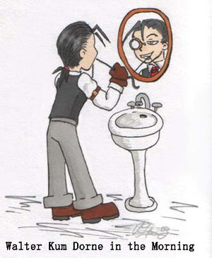
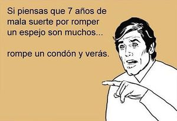

De seguro que tú, amigo frikipedista, el que se baña cada 5 dias, el que no se peina antes de salir, el que no sabe como combinar una gorra, una manzana y un piojo, el que sabe quien es Steve Jobs, el que tiene un sable laser en su cuarto, el que se sienta en el baño con la lapton en las piernas a leer la frikipedia y a hacer mierda, el que sabe mas que Socrates, el que solo sale de su casa-cuarto para ir a la tienda de comics a buscar el manga que te dijeron que en estas semana venia, pues has sido victima de aquel ser despiadado que desde lejos o cerca(por equivocacion obviamente)te dice que no haces parte de la sociedad, que luces como Harry Petas, que no pasaras de tener uno o dos amigos y que te equivocaste de mundo(de hay tu plan friki para conquistar la Tierra). Bueno pues hoy encontraras la solucion, hoy aprenderas COMO SOBREVIVIR A SU ATAQUE sin sufrir en el intento.
EL ESPEJO
| Aliados |
las camaras y vidrios
|
| Sus fans |
lasjessi y los cani
|
| Enemigos a morir |
los frikis, los delfines y vampiros
|
| Inteligencia |
alta, con solo mirarte te destruyen
|
| Creador |
Dios o Diox(hay una discusion entre ellos por las patentes)
|
| Plan malevolo |
acabar con todos los frikis y personas feas(se dice de la persona no apta para estar en presencia de un espejo) en el mundo
|
| Punto de encuentro |
la sala, el baño, las tiendas
o supermercados
|
| Nivel de peligro |
alto, con solo mirarte te destruyen y tambien pueden estar en movimiento(te siguen en carro )
|
¿Porque el espejo es tu enemigo?
 Cani fraternizando con el enemigo
- Porque ves en el toda la desgracia(osea a ti), todos los dias
- Ademas por que el fue el primero que te dijo que eras raro o friki
- Porque lo usan las jessi y los cani
- Porque los vampiros no se pueden ver en el
- Porque estan en todos lados
- Porque hay que tener uno obligatoriamente en la casa(o lo compra tu mama, o tu papa o tu hermanita)
- Porque no pueden oir musica
¿Como se combina una gorra, una manzana y un piojo?
Ni yo se eso. Mentiraaaa si se!!! y no te voy a decir Muahajajaja y mas Muahajajaja
Historia de nuestra enemistad
Cuando los frikis fueron creados por el internet o dios hubo un friki que le pego por donde mas le duele: la tarjeta madre; por que él no le quiso darle una Alienware M7700 Area-51 de cumpleaños, asi que de tanta rabia que cojio dios, lo maldijo creando una raza de seres que se esparcirian como conejos en el mundo que lo perseguirian a el y a toda su estirpe hasta el fin del internet y que estos malevolos seres le mostrarian su precaria aparencia y
Nota: Se dice que Adam y Eva surgieron de ese friki pecador(hipotesis no comprobada)
Formula fisica del espejo
Tu+yo=el
Falso Tu+yo=hijo
La verdad: El espejo no tiene formula, solo se sabe que existe para torturarte
Metodos para derrotar al espejo
Metodo incorrecto para derrotar un espejo
Coloca un espejo delante de otro
- PROS: Ganarías la batalla consiguiendo que los espejos de rompan en 1000 pedazos simultáneamente
- CONTRAS: Tendrías 2000 espejillos
- RECONTRA: Te harías daños al recogerlos
- REQUETERECONTRA: Al destruirse dos epejos simultáneamente el universo se quiebra en 1 parte exactamente igual a la misma provocando un ultrasonido que deja sordo a todo friki a 2000 Km a la redonda haciendo que éste no pueda oir la musiquilla de Lost
Utiliza tu espada laser para partirlo en dos
- PROS: Utilizarias tu espada laser por el bien de la humanidad
- CONTRAS: Ahora tienes dos espejos mas que destruir
Mejor: golpéalo con un objeto contundente
- PROS: Se rompería en mil pedazos
- CONTRAS: Ahora tienes mil espejos más que destruir. Aunque sean en miniatura, no sólo reflejan, sino que además tienen bordes afilados para herirte (doble daño, sensación única)
Llama a Stephen Hawking para que con su supersilla lo derrote
- PROS: Conocerias a Stephen Hawking
- CONTRAS: Stephen Hawking le teme a los espejos asi que probablemente saldria rodando
Llama a tus padres y diles que no pudes dormir por que hay un monstruo en el espejo asi que tienen que quitar todos los espejos de la casa
- PROS: Dormirias tranquilo
- CONTRAS: Aun hay 871.657.521 espejos en el mundo
- RECONTRA: Te faltan los vidrios de los carros
Inventa un aparato que desactive el funcionamiento de los espejos
- PROS: Serias quien salve a los frikis del exilio y seras galardonado en la comunidad
- CONRAS: No sabes como hacer el aparato
- RECONTRA: La comunidad no da buenos premios asi que pa que esforzarse
Contrata a un mimo que finja ser tu
- PROS: El espejo creera que eres tu y te dejara de seguir a ti para seguir a tu mimo doble
- CONTRA: Nadie puede imitarte tan bien como tu lo haces
- RECONTRA: El espejo se daria cuenta del plan, asi que por venganza se multiplicaraia por nueve
 Un señor cualquiera dándote un buen consejo.
Usa tus poderes de psiquico para saber que esta pensando y asi contraatacarlo antes de que actue
- PROS:Te salvas del espejo
- CONTRAS:Necesitas 871.657.521 psiquicos mas para acabar con todos los espejos del mundo
- RECONTRA: No hay 871.657.521 psiquicos en el mundo
- REQUETECONTRA: No eres psiquico, asi que necesitas 871.657.522 psiquicos para destruirlos todos
- PROS: Solo quieres salvarte a ti por ahora no a toda la humanidad asi que no te hacen falta los psiquicos.
Invita a Michael Jackson a tu casa
- PROS: Come niños asi que tambien se puede comer un espejo
- CONTRAS: Tambien te comeria a ti (=P)
- Michael Jackson ya no sive tendrá que ser Jimmy Neutrón.
Muestrale una foto de tu abuela en calzones
- PROS: Infalible,tal seria el trauma que no querria reflejar a nadie mas, ni siquiera a sus peores enemigos para hacerles la vida imposible
- CONTRA: ¿Que depravado tiene una foto de su abuela en calzones?
w
Ponlo a ver television durante 30 dias, las 26 horas al dia
- PROS: Se le pondrian los ojos cuadrados de tanto ver tv, por lo tanto ya no te verian mas
- CONTRAS: Los espejos no tienen ojos
- PROS: ¿Como que no? sino con que te ven tonto
- CONTRAS: Ya son cuadrados la mayoria
Crea una raza de animales comespejos que salgan de la hibridacion de Britney Spears con Mike Tyson
- PROS: Ellos quedarian llenos y tu corazon digo cerebro contento
- CONTRAS: Ellos no harian eso por ti gratis, les tienes que pagar
- RECONTRA: No tienes la plata
- REQUETECONTRAS: Mejor combina a Jackie Chan con
Nunca lo limpies
- PROS: La mugre lo tapara y asi no te verias en el. Muhajajaja
- CONTRA: Tu mama no dejaria que un espejo este sucio asi que lo limpiaria acabando con tu malevolo plan
Tapalo con una manta
- PROS: Ya no tendrias que verte la cara de friki todos los dias
- CONTRAS:Se te acabarian las mantas de tu casa cubriendolos todos
- RECONTRA: Te daria frio en la noche
- REQUETECONTRA: Da flojera
Convoca una asamblea en la ONU
- PROS: Con la ayuda de todos los delegados acordarian como hacer papas fritas con palomitas
- CONTRAS: Son muy brutos, no sabrian como hacer eso
- RECONTRA: Nada harian en contra de los espejos
Dedicale una cancion para que se enamore de ti, se hagan novios y despues lo terminas por que te engaño dejando que Juana se viera en el(solo debe tener ojos para ti). Asi que triste y apenado no te querra volver a ver mas en tu friki vida.
- PROS: Tendrias tu primer novio(a)
- CONTRAS: No sabes cantar
- RECONTRA: Tambien te gusta Juana
- REQUETECONTRA: Tu primera relacion no durara mucho
- REREQUETECONTRA: No podras tener sexo con ella y despues botarla(en caso de que sea la espeja)
Muestrale al espejo una foto de Angelina Jolie
- PROS:Quedaria encantado con ella y pondria su imagen en todos los espejos del mundo y asi no se refleja la tuya ni la de los otros frikis
- CONTRAS: Angelin Jolie ya debe tener un espejo que la haya mirado y no ha pasado nada asi que es
probable que el plan no funcione
Disparale con una escopeta
- PROS: Se destruiria
- CONTRAS: No tienes escopeta
Enviale un E-mail pidiendole que se rindan
- PROS: Se evitarian muchas muertes y traumas inocentes por que se evitaria una batalla campal
- CONTRAS:No se rendiran tan facil y Cortezmente
- RECONTRA:Los espejos no tienen E-mail
Lo asustas cuando este dormido
- PROS: Se moriria de un infarto
- CONTRA: No sabes asustar
- PROS: Falso, con esa cara de friki asustas a cualquiera
- RECONTRA: Lo quieres evitar asi que no te le vas a acercar
Comprale el libro mas aburrido del mundo
- PROS: Como los espejos son aburridos, de seguro les gusta el libro y quedan sumergidos en la historia
- PROS: Despues no hay quien los saque de ahi
- CONTRA: No existe tal libro
- PROS: Si lo hay analfabeta
- RECONTRA: Los espejos no son aburridos cuando muestran la desgracia ajena, es decir, la tuya Muahajajaja
Usa el avada kadabra para matarlo
- PROS:Serias un buen mago
- CONTRAS: No tienes una varita magica o por lo menos un que funcione de verdad, ni siquiera tienes un libro de conjuros
- RECONTRA:Te mandan a Azcaban por haberlo utilizado
- REQUETECONTRA:No eres mago(ni siquera uno sangre sucia) asi que no puedes usarlo
Rezale a Zeus para que mande un rayo y destruya a todos los espejos del mundo
- PROS: Ya no habrian mas espejos en el mundo
- CONTRAS: Probablemente el rayo despues de pegarle al espejo se volveria y mataria a Zus
- RECONTRA:No sabes como invocar a Zeus
- REQUETECONTRA: El mundo se quedaria sin rayos en el mundo
- PROS: Eso no es malo
Llamar a un exterminador de espejo
- PROS: Verias al espejo sufrir cuando muere
- CONTRAS: Cobran muy caro
- RECONTRA: Hacen un trabajo mal hecho, por que lo espejos resusitan
Consiguete a Sheldon Cooper
- PROS: El puede hacer un pez luminoso, asi que puede destruir a los espejos
- CONTRA: No te haria el favor a menos que fueras su amigo
- RECONTRA: No eres su amigo
- REQUETECONTRA: Creeme, el tampoco quiere serlo
Metodo facil
- Llamarias a los bomberos, ellos no sabrian como encontrar tu casa, se irian de rumba, alli se encontraran con unas jessis, los canis se ponen celosos, matan a los bomberos a punta de piercings y cachetadas(no se saben otro golpe), llegaria la policia y los meten a todos a las carcel incluyendo al unico bombero vivo, alla en la carcel una rata le hace un tatto de Jackie Chan a la reja, esta cae partida en dos a causa de los golpes de J, el bombero sale y los canis tambien, se encuentra con una moneda y te llama para saber como van la situacion, tu le dice que mal, que el espejo te sigue atormentando(te tiene acorralado), entonces se consigue un sombrero de vaquero y llama a Bush pidiendole la casa blanca prestado por unos dias, Bush le hizo el favor porque el fue el que lo cubrio cuando quizo declararle la guerra a irak, alli el bombero se hace pis y en helicoptero llega hasta tu casa, entra en tu cuarto y con su super manguera riega al espejo
- PROS: Tu espejo se derrite y el bombero te salva la vida
- CONTRA: No tienes como pagarle al bombero
- RECONTRA: Los bomberos no existen
Metodo dificil
- No comprar un pinche espejo
Metodo que quiza funcione
No te laves la cara para que te salgan granos, hazte piercings y quítatelos para que se vean las cicatrices, peléate con unos canis o jebis para que te desfiguren la cara, date cabezazos contra la pared, insulta levemente a Chuck Norris, lee en voz alta tu factura de teléfono, rájate un poco la frente, leete un diccionario a 0,0000000000000000000001 nanómetros de distancia para que se te queden los ojos fatal y ten un accidente de coche. Una vez tengas la cara horriblemente deformada, mira de frente al espejo.
- Pros: El espejo se romperá.
- Contras: Se romperá la pared, la casa, los coches, los árboles y toda persona que te mire, hasta que tu imagen de la vuelta al mundo y te rompas a ti mismo. Es un poder que requiere control si sólo queremos destruir a los espejos.
En caso de algun trauma hecho por el enemigo
- Ponerte a llorar
- Dejar de ser friki(IMPOSIBLE)
- Llamar a un frikipedista experto en el tema
- Conseguirte a otros amigos para que entre todos le rompan la cara
- Suicidate(Noooo!!! eso solo lo hacen los emo)
- Sacarte los mocos
- Lo anterior ya lo hacias antes de que conocieras el internet, osea desde toda tu vida, por que no hay vida sin internet, asi que no te sirve de remedio a menos que tengas una gripa
- Unirtele(eso solo lo hacen los cobardes, mejor declarale la guerra)
- Leete el manual de primeros auxilios
Espejos famosos y sus victimas
No te creas que el espejo no ha tenido victimas reconocias, por que claro es un enemigo de talla mundial.
Este espejo hizo destrozos y casi termina ocasionando la muerte a la pobre muchacha al empezar a decirle mentiras a la madrastra cuando le preguntó ¿quien es la mas bonita? y el muy liso le dijo que Blancanieves(y como no iba a serlo si la bruja esa tenia exceso de maquillaje y ya rondaba por los 40, cualquiera luciria mejor que ella ), sabiendo que la reina se molestaria y asi dañaria la autoestima de ella, pero todo por venganza de que la reina le estaba coqueteando al retrovisor del Wolvagens que tenia como carruaje.
- El de Harry Potter y la piedra filosofal
Es ese de OESED(DESEO)hay casi Harry se queda trabado mirandolo por que podia ver a sus papis hasta que Dumbledore le dijo que no mirara mas por que podia quedarse traumado de por vida, y asi el pequeño Harry se salvo del malevolo y a hora lidera la campaña FCE(Frikis en Contra de los Espejos) .¡Unete!
En este las Rozen pasan al Campo N a través de un antiguo espejo de la casa de Sakurada Jun. Pobres... si que la pasaron mal
- El que Stephen Hawking no usa
Obviamente ya sabemos la razon. Pero si eres un cani y no sabes esto, hay te va: Es demasiado intelegente como para perder el tiempo en algo que sabe que con su "super silla" podria destruir.
No te hagas el que nunca tuvo o tiene uno en su casa
victima: tu y tu hermanito(a)
Mi madre me ha sabido poner dos en el cuarto,
victima: yo y nadie por que solo nadie puede entrar a mi cuarto(es una mina quiebrapatsa que solo yo y nadie podemos sobrevivir)
Nota: ni tu espejo ni el mio son famosos asi que no te creas mucho.
 De: La Frikipedia, la enciclopedia extremadamente seria.
De: La Frikipedia, la enciclopedia extremadamente seria.